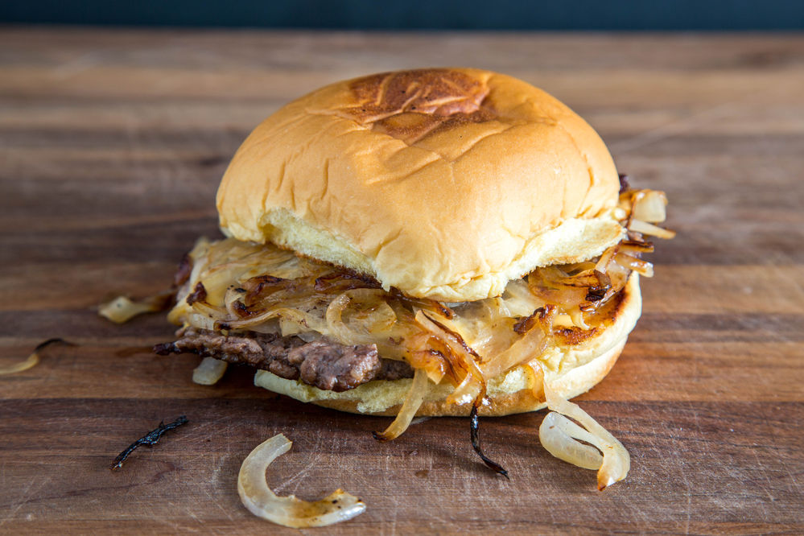

Onion Burger

Description
This is a classic oklahoma fried onion burger recipe, which is a bit famous in my family.
At its core, this is a simple smash burger with an amazing amount of fried and caramalized onions.
However, explore the history of the recipe and you will find its orgin in the Great Depression, where food outlets
were saving money by using as much onions as beef in the patties of their burgers.
Simple in design but complex in flavour, you will fall in love with this unassuming smash burger the second you take a bite.
Ingredients
- 6 small hamburger buns.
- 500g beef mince. Make sure to get 20% fat content (or close).
- 500g brown onion.
- 6 slices american cheese.
Steps
- Using the thinnest setting on a mandolin (or carefully with a sharp knife), slice the onions paper thin.
- Prepare the beef mince by creating slightly smaller than tennis ball sized mince balls.
- Preheat a bbq hot plate to the highest possible heat.
- Toast the buns quickly and put aside.
- Smash the beef balls as thin as possible, and heap thin onions on top, seasoning with salt.
- Press the onions down into the patty to infuse with juices.
- Once crust develops, flip with confidence and season with salt.
- Place cheese, then bottom bun face down and top bun on top.
- Once onions cooked, use spatula to pick up patty, and move top bun under to catch onions when removing the spatula.
- Serve as is, or with preferred condiments. See burger sauce recipe.